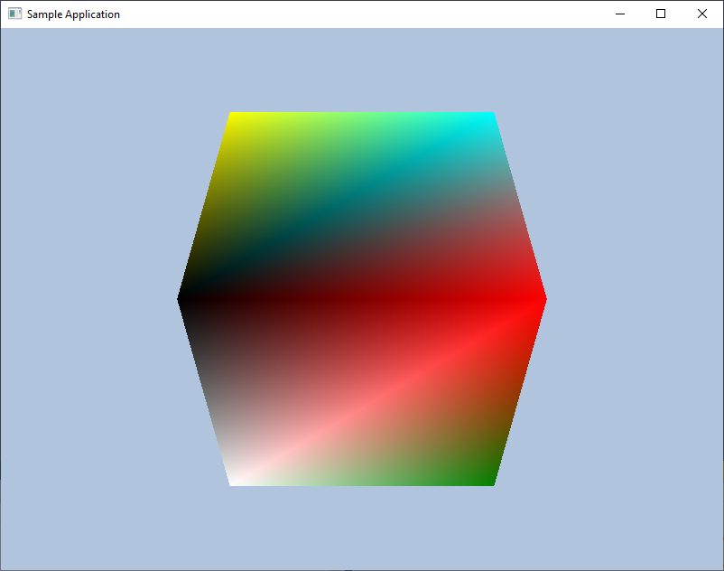

Исходный код для Visual Studio 2019:
Инициализация DirectX12Содержание
Файлы DirectX 12 SDK включены в состав Windows SDK. Файлы DirectX 12 расположены в папке Windows SDK по пути: C:\Program Files (x86)\Windows Kits\10 - в этой папке есть две папки Include/Lib c файлами DirectX 12 SDK. Windows 10 вышла в июле 2015 года, DirectX 12 вышел вместе с Windows 10 в июле 2015 года.
Минимальные требования для DirectX 12:
Windows Runtime Library предоставляет умный указатель для COM объектов:
using Microsoft::WRL::ComPtr; Microsoft::WRL::ComPtr<ID3D12Device> md3dDevice; Microsoft::WRL::ComPtr<ID3D12Resource> mDepthStencilBuffer;
Для использования ComPtr в коде С++ необходимо включить заголовочный файл:
#include <wrl.h>
Это класс умного указателя для COM. ComPtr из Microsoft::WRL (Windows Runtime Library) — это умный указатель для работы с COM-объектами, например ID3D12Resource, ID3D12Device и т. д. Он автоматически управляет временем жизни объектов и избавляет от необходимости вручную вызывать Release().
Так как уже объявлено:
using Microsoft::WRL::ComPtr;
В данном случаем можно просто написать:
ComPtr<ID3D12Device> md3dDevice;
Расшифровывается следующим образом:
Microsoft::WRL::ComPtr<ID3D12Resource> — это тип переменной.
ComPtr<ID3D12Resource> — умный указатель на ID3D12Resource, который автоматически управляет временем жизни COM-объекта.
ID3D12Resource — интерфейс, представляющий ресурс (в данном случае буфер глубины и трафарета).
mDepthStencilBuffer — это имя переменной, которая хранит ссылку на ресурс глубины (Depth-Stencil Buffer).
Используются три главных метода ComPtr:
Первый метод ComPtr это Get() – Получение обычного указателя. Возвращает T* (сырой указатель), но не изменяет счётчик ссылок.
ComPtr<ID3D12Device> device;
// Передаём в функцию, которая требует `ID3D12Device*`
SomeFunction(device.Get());
void SomeFunction(ID3D12Device* device)
{
// Работа с устройством Direct3D 12
}
Второй метод ComPtr это GetAddressOf() возвращает адрес указателя на лежащий в основе COM интерфейс. GetAddressOf() – получает T** без освобождения текущего объекта. Использовать ТОЛЬКО если объект ещё не инициализирован. Если объект уже есть сначала вызываем ReleaseAndGetAddressOf(), чтобы избежать утечки памяти. Метод GetAddressOf() возвращает адрес внутреннего указателя, но не вызывает Release(). Используется, когда нужно передать ComPtr в функцию, которая ожидает T** (указатель на указатель).
Допустим, мы хотим создать буфер в DirectX 12:
ComPtr<ID3D12Resource> buffer; HRESULT hr = device->CreateCommittedResource( &heapProperties, D3D12_HEAP_FLAG_NONE, &resourceDesc, D3D12_RESOURCE_STATE_COMMON, nullptr, IID_PPV_ARGS(buffer.GetAddressOf()) // Передаём `ID3D12Resource**` );
ComPtr<ID3D12Resource> buffer; // Эти две строки дают один и тот же результат: ID3D12Resource** p1 = buffer.GetAddressOf(); ID3D12Resource** p2 = &(buffer.Get());
GetAddressOf() работает на уровне ComPtr, поэтому не нарушает внутреннюю логику управления памятью и использовать GetAddressOf() более рекомендуется чем взятие адреса &(buffer.Get());
Третий метод ComPtr это Reset() – Освобождение объекта (вызывает Release()). Reset() устанавливает объект ComPtr в nullptr и уменьшает счетчик ссылок на лежащий в основе COM интерфейс. Эквивалентно p->Release(); p = nullptr;, но безопаснее.
ComPtr<ID3D12Resource> buffer;
// Освобождаем ресурс вручную
buffer.Reset();
// Теперь buffer == nullptr
if (!buffer)
{
printf("Буфер успешно освобождён\n");
}
Reset() фактически делает delete для COM объекта в понимании обычных классов, так же Reset() сбрасывает счетчик ссылок на объект в ноль.
//тут счетчик ссылок 0 ComPtr<ID3D12Resource> buffer; //тут счетчик ссылок = 1 CreateCommitedResource(buffer); //buffer указывает на объект, счетчик ссылок = 2 buffer = some_resource; //buffer больше не указывает на объект buffer.Reset(); // счетчик ссылок на объект = 0, объект уничтожен, если это была последняя ссылка
Если для объекта мы вызовем функцию Reset() то после этого, можно снова вызвать GetAddressOf() без использования функции ReleaseAndGetAddressOf().
После того как вы вызвали Reset(), переменная buffer больше не указывает на объект. Однако сам объект buffer по-прежнему является действительной переменной, и вы можете повторно использовать ее, присваивая ей новый объект или ресурс. После вызова Reset() переменная buffer сама по себе остается валидной и доступной для повторного использования. Она просто больше не указывает на тот объект, на который указывала ранее. Если вы хотите использовать buffer для нового объекта, вам нужно просто присвоить ему новый ресурс, как показано в примере. Это приведет к тому, что buffer снова будет указывать на новый объект, и его счетчик ссылок будет увеличен.
Изменение счетчика ссылок (reference count) относится к механизму управления памятью в COM (Component Object Model). В ComPtr<T> (умный указатель от Microsoft WRL) счетчик ссылок используется для автоматического управления временем жизни COM-объекта. Когда счетчик ссылок достигает 0, объект COM автоматически удаляется.
DirectX функции размещены в DLL, но это не обычные DLL это COM DLL. DirectX построена на технологии COM. Чем COM DLL отличаются от обычных DLL? Если мы загружаем обычную DLL мы получаем доступ к отдельным функциям, которые содержит эта DLL. Если мы загружаем COM DLL мы получаем доступ к интерфейсам, которые создаются на базе ООП и через интерфейс получаем доступ к функциям. Интерфейс в COM это аналог абстрактного класса в обычном С++. Интерфейсы реализуются через виртуальные таблицы (vtable), что позволяет работать с ними в объектно-ориентированном стиле. Обычная DLL экспортирует функции. COM DLL предоставляет интерфейсы (объекты с методами). В DirectX 12 объекты, такие как ID3D12Device, ID3D12Resource, ID3D12CommandQueue, являются COM-объектами, которые создаются через COM API.
В обычном C++ мы создаем объект через new:
MyClass* obj = new MyClass();
В COM мы вызываем фабричную функцию, которая возвращает интерфейс:
ID3D12Device* device = nullptr; D3D12CreateDevice(nullptr, D3D_FEATURE_LEVEL_11_0, IID_PPV_ARGS(&device));
Мы не управляем памятью напрямую через new/delete — за это отвечает COM.
Создание COM-объекта — это не просто new, а вызов API, который возвращает интерфейс. Сам объект существует внутри библиотеки, а мы работаем с ним только через указатель на интерфейс.
Интерфейс в COM — это абстрактный класс, доступ к методам которого осуществляется через таблицу виртуальных функций (vtable). В COM когда вы получаете указатель на интерфейс, фактически вы получаете указатель на таблицу виртуальных функций объекта, и вызываете методы объекта с использованием таблицы виртуальных функций.
Таким образом в обычной DLL мы загружаем эту DLL и прямо из нее вызываем нужные функции (которые есть в этой DLL). В COM DLL мы получаем из DLL интерфейс, и уже через интерфейс вызываем нужные функции, которые есть в этой DLL.
Обычная DLL:
COM DLL:
В проектах используется файл d3dx12.h - этот файл является частью ядра DirectX 12 SDK. Этот файл не входит в Windows SDK и не устанавливается автоматически. Однако он доступен на GitHub Microsoft в репозитории DirectX-Headers. Он упрощает работу с DX12, но не обязателен.
Что такое d3dx12.h?
Это вспомогательная обертка (helper header), которая упрощает работу с DX12. Он содержит:
Макрос:
IID_PPV_ARGS(p)
Рассмотрим, что именно делает IID_PPV_ARGS(p).
Например у нас есть код:
Microsoft::WRL::ComPtr<ID3D12Device> md3dDevice; //пытаемся создать hardware устройство DX12 HRESULT hardwareResult = D3D12CreateDevice( nullptr, //адаптер по умолчанию D3D_FEATURE_LEVEL_11_0, IID_PPV_ARGS(&md3dDevice));
Без макроса мы его можем переписать как:
Microsoft::WRL::ComPtr<ID3D12Device> md3dDevice; //пытаемся создать hardware устройство DX12 HRESULT hardwareResult = D3D12CreateDevice( nullptr, //адаптер по умолчанию D3D_FEATURE_LEVEL_11_0, __uuidof(**(md3dDevice.GetAddressOf())), // первый параметр макроса - GUID интерфейса (void**)(md3dDevice.GetAddressOf()));
Сам макрос в файле combaseapi.h (файл из Windows SDK) выглядит так:
#define IID_PPV_ARGS(ppType) __uuidof(**(ppType)), IID_PPV_ARGS_Helper(ppType)
Из С++ известно, что макрос - это просто то что подставляется в код "как есть". В этом макросе IID_PPV_ARGS через запятую в функцию передаются два параметра.
Часть макроса __uuidof(**(ppType)) - __uuidof() — это встроенная в компилятор функция, которая возвращает GUID интерфейса, переданного как параметр. В случае с COM интерфейсами это возвращает уникальный идентификатор интерфейса. Зачем нужен GUID - это просто 128 битное число которые мы присваиваем переменной, эта переменная хранит этот GUID или по другому IID (interface id), при помощи GUID(IID) мы делаем интерфейс уникальным.
Часть макроса IID_PPV_ARGS_Helper(ppType) преобразует указатель в (void**).
Пример использования __uuidof() для получения GUID:
ComPtr<ID3D12Resource> pResource; // Допустим, pResource был инициализирован каким-то объектом. auto guid = __uuidof(*pResource.Get()); // guid теперь содержит IID_ID3D12Resource
В данном случае __uuidof() вернет IID_ID3D12Resource. IID_ID3D12Resource — это просто глобальная переменная, содержащая 128-битный GUID (Globally Unique Identifier) для интерфейса ID3D12Resource.
Пример GUID для ID3D12Resource. Для интерфейса ID3D12Resource GUID будет следующим::
//хранится в файле d3dx12.h
const IID IID_ID3D12Resource =
{ 0x6f15dba2, 0x2f96, 0x4bcf, { 0x9d, 0xe1, 0x43, 0x75, 0x68, 0xf5, 0x91, 0x9d } };
IID (Interface Identifier) — это тип данных, используемый для представления уникальных идентификаторов интерфейсов в COM (Component Object Model). Он обычно имеет тип GUID (Globally Unique Identifier).
//определение в Windows SDK typedef GUID IID; // IID является синонимом для GUID
COM не использует имена методов или классов в рантайме, а опирается на IID, чтобы правильно вызывать методы. В COM вызовы методов интерфейса происходят через таблицу виртуальных функций (vtable), а IID (Interface Identifier) используется для получения указателя на нужный интерфейс объекта. В COM используются IID вместо простых имен классов, потому что COM изначально был разработан для бинарной совместимости и работы в разных языках программирования. IID — это просто 128-битное число, которое не зависит от имени класса, языка программирования или платформы. Если два разработчика назовут свой класс FileManager, они могут пересечься в одном проекте. Если они используют GUID/IID, вероятность пересечения практически нулевая.
Внутреннее представление GUID состоит из четырех частей (это просто структура С++):
struct GUID
{
unsigned long Data1; // 4 байта (DWORD)
unsigned short Data2; // 2 байта (WORD)
unsigned short Data3; // 2 байта (WORD)
unsigned char Data4[8]; // 8 байт (BYTE массив)
};
GUID (или UUID) — это глобально уникальный идентификатор, состоящий из 128 бит. Его уникальность настолько высока, что вероятность совпадения двух GUID практически равна нулю, даже если генерировать их миллионы лет. Можно считать, что два одинаковых GUID в природе не встретятся.
В коде мы создаем устройство DirectX 12:
Microsoft::WRL::ComPtr<ID3D12Device> md3dDevice; HRESULT hardwareResult = D3D12CreateDevice( nullptr, //адаптер по умолчанию D3D_FEATURE_LEVEL_11_0, IID_PPV_ARGS(&md3dDevice));
WARP адаптер это софтверный режим работы DX12 - Windows Advanced Rasterization Platform (WARP). WARP (Windows Advanced Rasterization Platform) — это софтверная реализация рендеринга в DirectX. Он используется для тестирования, отладки и разработки графических приложений, когда аппаратное ускорение недоступно или не требуется. Поскольку WARP использует CPU для рендеринга, его производительность значительно ниже, чем у аппаратного рендеринга на GPU. Когда разработчик создает приложение, которое использует Direct3D 12, но на тестовой машине нет современного GPU, приложение может использовать WARP для рендеринга.
В начале инициализации DX мы включаем debug layer – это улучшает отладку приложений DX12. debug layer используется в режиме debug build. Когда Debug Layer включен DX12 позволяет получить более обширную информацию об отладке и посылает debug messages в Output window VC++. VS Output - кто ранее не использовал, что это. После запуска приложения в Visual Studio, справа внизу появляется окошко Output - в него выводиться вся информация об отладке, и ошибках в приложении. Для справки - есть функция OutputDebugString() при помощи которой можно вести лог в окне Output VS, например так:
#include <Windows.h>
#include <stdio.h>
void SomeFunc()
{
//некоторая переменная которую будем логировать
int Val = 0;
//некоторые вычисления с Val
Val++;
//выводим значение переменной в окне Output VS
char buff[256];
sprintf(buff, "%d\n", Val);
OutputDebugString(buff);
}
В следствии того что мы можем создавать WARP устройство (софтверное устройство) нам необходимо создать IDXGIFactory4 объект что бы перечислить WARP устройства. IDXGIFactory4 объект так же нужен что бы создать swap chain, так как swap chain это часть DXGI DirectX Graphics Infrastructure (т.е. swap chain может быть использовано как для двухмерных так и для трехмерных приложений – общее для них DXGI).
IDXGIFactory4 — это интерфейс в DirectX 12, который является частью DXGI(DirectX Graphics Infrastructure).Он используется для управления графической инфраструктурой, включая создание устройств(адаптеров) и цепочек обмена(Swap Chains). DXGIFactory необходимо для создания SwapChain – это общее для 2D и 3D графики и там и там есть SwapChain. Когда мы создаем SwapChain фактически создаем две текстуры- задний буфер, буфер кадра. Эти две текстуры меняются попеременно- пока в одну рисуется изображение другая текстура выводиться на экран, потом они меняются местами (указатели на эти текстуры меняются местами).
DirectX Graphics Infrastructure (DXGI) — это общий уровень для как 2D, так и 3D-графики в DirectX. DXGI управляет видеокартами (адаптерами), дисплеями, буферами кадров и цепочками обмена (Swap Chains), которые нужны и для 2D, и для 3D-рендеринга.
Swap Chain вынесен в DXGI, потому что это общий механизм вывода кадров на экран, который нужен и для 2D-графики (Direct2D), и для 3D-графики (Direct3D). Если бы цепочка обмена (SwapChain) была частью ID3D12Device, это бы привязало её только к Direct3D, а DXGI изначально проектировался как универсальный уровень для всей графической инфраструктуры Windows.
Swap Chain вынесен в DXGI, потому что это универсальный механизм для 2D и 3D. DXGI отвечает за адаптеры, буферы, мониторы, синхронизацию кадров. ID3D12Device занимается рендерингом, но не управляет цепочкой обмена напрямую. Таким образом, DXGI – это "нижний" уровень работы с графикой в Windows, а Direct3D и Direct2D используют его для рендеринга.
При помощи функции:
ID3D12Device::CheckFeatureSupport()
Мы можем получить параметры multisampling для заданного формата текстуры поддерживаемые адаптером. Если в приложении вы не хотите использовать multisampling то установите в приложении sample count = 1 и quality level = 0. Back buffer и Depth buffer должны быть созданы с одними и теми же параметрами multisampling.
CheckFeatureSupport — этот метод позволяет запросить поддержку конкретных свойств адаптера, таких как поддержка отдельных возможностей (например, поддержка различных типов рендеринга, форматов, особенностей графического процессора).
HRESULT CheckFeatureSupport( D3D12_FEATURE Feature, void* pFeatureSupportData, UINT FeatureSupportDataSize );
Feature — это тип свойства, которое вы хотите проверить. Это перечисление типа D3D12_FEATURE. pFeatureSupportData — указатель на структуру, которая будет заполнена информацией о поддерживаемом свойстве. FeatureSupportDataSize — размер структуры, передаваемой в pFeatureSupportData.
Типы свойств, которые можно проверить с помощью CheckFeatureSupport:
D3D12_FEATURE_D3D12_OPTIONS — информация о базовых функциях, доступных на устройстве, таких как поддержка ранних выходов шейдеров, асинхронных вычислений и другие. D3D12_FEATURE_ARCHITECTURE — проверка архитектуры устройства, например, 32-битное или 64-битное устройство. D3D12_FEATURE_FEATURE_LEVELS — информация о поддерживаемых уровнях функциональности. D3D12_FEATURE_FORMAT_SUPPORT — информация о поддерживаемых форматах рендеринга. D3D12_FEATURE_MULTISAMPLE_QUALITY_LEVELS — проверка поддерживаемых уровней качества для многократной выборки. D3D12_FEATURE_SHADER_MODEL — информация о поддерживаемых моделях шейдеров. D3D12_FEATURE_RAYTRACING (начиная с версии DXR) — проверка поддержки трассировки лучей. D3D12_FEATURE_GPU_VIRTUAL_ADDRESS_SUPPORT — поддержка виртуальных адресов GPU. D3D12_FEATURE_SPARSE_TEXTURES — поддержка текстур с разреженными данными. D3D12_FEATURE_WAVE_MMA — поддержка расширенных операций с волнами для оптимизации производительности.
Для проверки, поддерживает ли ваше устройство определённые особенности, например, поддержку модели шейдеров, можно использовать следующий код:
#include <d3d12.h>
#include <iostream>
void CheckShaderModelSupport(ID3D12Device* device)
{
D3D12_FEATURE_DATA_SHADER_MODEL shaderModel;
HRESULT hr = device->CheckFeatureSupport(D3D12_FEATURE_SHADER_MODEL, &shaderModel, sizeof(shaderModel));
if (hr == S_OK) {
std::cout << "Supported Shader Model: " << shaderModel.HighestShaderModel << std::endl;
} else {
std::cout << "Failed to check shader model support" << std::endl;
}
}
int main()
{
// Предполагается, что у вас уже есть устройство (ID3D12Device*)
ID3D12Device* pDevice = nullptr;
// Здесь код создания устройства (например, через D3D12CreateDevice)
CheckShaderModelSupport(pDevice);
return 0;
}
D3D12_FEATURE_D3D12_OPTIONS (проверка основных возможностей):
struct D3D12_FEATURE_DATA_D3D12_OPTIONS {
BOOL DoublePrecisionFloatShaderOps;
BOOL OutputMergerLogicOp;
BOOL RenderTargetFormatBlendFactor;
BOOL StandardSwizzle;
BOOL TiledResourcesTier;
BOOL WeightedSampleMask;
BOOL DepthBoundsTest;
BOOL ExtendedShaderInstructions;
};
D3D12_FEATURE_SHADER_MODEL (информация о поддержке модели шейдеров):
struct D3D12_FEATURE_DATA_SHADER_MODEL {
D3D_SHADER_MODEL HighestShaderModel;
};
За более подробной информацией обращайтесь к документации MSDN Microsoft по DirectX 12.
MSAA – это сокращение от multisampling anti aliasing
Создание устройства DX
В коде примера устройство DX создается при помощи функции D3D12CreateDevice. Сначала мы создаем hardware device, если его создание завершилось неудачей, следующим создаем software device, т.е. warp adapter.
Указание D3D_FEATURE_LEVEL_11_0 при создании устройства в DirectX 12 делается для совместимости с более старыми видеокартами. Даже если видеокарта не поддерживает все возможности DX12, она может работать через этот API, если у неё есть аппаратная поддержка уровня Feature Level 11.0. Если вы укажете D3D_FEATURE_LEVEL_12_0 или D3D_FEATURE_LEVEL_12_1, то устройство не создастся на старых GPU, которые аппаратно не поддерживают полноценный DX12. Чтобы не отрезать таких пользователей, можно запрашивать D3D_FEATURE_LEVEL_11_0, что позволяет работать с DX12 API, но с ограниченным функционалом. Например, так делает игра Doom Eternal, используя DX12 API, но поддерживая D3D_FEATURE_LEVEL_11_0. Запрос D3D_FEATURE_LEVEL_11_0 при создании DX12-устройства — это способ гарантировать запуск на старых видеокартах с DX11-уровнем поддержки, но с возможностью использовать оптимизированные механизмы DX12, если железо позволяет.
Если вы подставите в D3D12CreateDevice уровень поддержки, ниже чем D3D_FEATURE_LEVEL_11_0 (например, D3D_FEATURE_LEVEL_10_0), то скорее всего функция вернёт ошибку и не создаст устройство. Причина в том, что DirectX 12 требует, чтобы ваше устройство поддерживало хотя бы уровень D3D_FEATURE_LEVEL_11_0. Начиная с DX12, требования к функциональности графического устройства стали выше, и даже если ваше оборудование может поддерживать DX 10, для работы с DX 12 требуется поддержка как минимум 11-го уровня. Если вы попытаетесь создать устройство с более низким уровнем, например D3D_FEATURE_LEVEL_10_0, вызов скорее всего завершится ошибкой. Если вам нужно работать с DX 10 или ниже, стоит использовать более старую версию DirectX, например DirectX 11 или DirectX 10.
Метод EnumWarpAdapter() не означает, что WARP-адаптеров может быть несколько и они перечисляются (enum), а просто следует общей логике DXGI API. В текущей Windows среде существует только один софтварный адаптер (WARP), но API оставляет возможность расширения в будущем. Например в будущем будет добавлен WARP2 адаптер, тогда EnumWarpAdapter() будет их перечислять. Но сейчас в данный момент EnumWarpAdapter() возвращает один WARP адаптер (софтверное устройство).
Процесс инициализации в коде примера разбит на следующие шаги
Мы создаем depth buffer это просто 2D текстура размером как back buffer. Каждому пикселю back buffer соответствует пиксель depth buffer.
Constant buffer размер должен быть кратен 256 это вычисляет функция CalcConstantBufferByteSize. Константный буфер это Resource DX12 ID3D12Resource. Константный буфер например может быть использован, что бы в шейдерную программу передать матрицу - вида, проекции, или результат перемножения матриц.
Vertex buffer и Index buffer загружаются следующим образом. Например у нас данные вершин хранятся в векторе vertex. Мы сначала этот массив vertex загружаем в UploadBuffer, потом из UploadBuffer в DefaultBuffer - такое свойство работы GPU. Мы не может просто так вершинные данные загрузить в буфер вершин GPU. DefaultBuffer это и будет наш вершинный буфер – Resource DX12 ID3D12Resource. Буферы должны быть помещены в default heap для лучшей производительности. Однако ресурсы в default heap недоступны для записи ЦП. Чтобы загрузить данные буфера, приложение должно вместо этого создать буфер upload heap (upload buffer), загрузить данные в этот буфер, а затем скопировать upload buffer в default буфер с помощью CopyResource() или CopyBufferRegion().
В примере приложения используется формат заднего буфера:
DXGI_FORMAT mBackBufferFormat = DXGI_FORMAT_R8G8B8A8_UNORM;
Давайте проанализируем. Эта строка состоит из двух частей _R8G8B8A8 и _UNORM. Первая часть строки формата _R8G8B8A8 говорит что один пиксель текстуры заднего буфера (то что будет в текстуре в приложении) содержит 4 компоненты R, G, B, A и каждая компонента занимает 8 бит. В 8 двоичных бит максимум можно разместить число 255, таким образом - у пикселя четыре компоненты RGBA и каждая компонента может быть в диапазоне от 0 до 255. Вторая часть строки формата _UNORM говорит как значение интерпретируется в шейдере - а именно - символ U значит unsigned, а NORM значит normalized - что в совокупности значит - беззнаковое нормализованное - то есть значение от 0 до 1. Что это значит - например в текстуре записано (255, 128, 255, 128) для каждой компоненты. Значит в шейдере будет (1.0f, 0.5f 1.0f, 0.5f) потому что расчет выглядит так:
R = 255 / 255 = 1.0 G = 128 / 255 = 0.5 B = 255 / 255 = 1.0 A = 128 / 255 = 0.5
Таким образом значения для шейдера нормализуются, то есть приводятся в диапазон от 0 до 1.
Например формат буфера глубины и трафаретного буфера:
DXGI_FORMATORMAT_D24_UNORM_S8_UINT
D24 говорит что для глубины (depth) используется 24 бита - в 24 двоичных бита максимум можно поместить число 16777215. UNORM то же значит что беззнаковое нормализованное для шейдера. Например в буфере глубины храниться 8388607 (половина максимума), делим 8388607 / 16777215 = 0.5 это значение 0.5 будет использовано в шейдере (значение нормализуется, то есть приводится в диапазон от 0 до 1). Трафаретный буфер (stencil) S8 значит под него отводиться 8 бит, число от 0 до 255. UNIT значит для шейдера беззнаковое целое - что является значением от 0 до 255 (без нормализации).
То есть в строке формата ресурса первая часть говорит какая компонента (RGBA, D, S) и сколько занимает байт каждый компонент. Вторая часть говорит - во что значение преобразуется для шейдера (UNORM, UINT).
Почему формат DXGI_FORMAT_D24_UNORM_S8_UINT не может быть использован в шейдере. Основная проблема заключается в том, что формат DXGI_FORMAT_D24_UNORM_S8_UINT использует 24 бита для хранения глубины и 8 бит для трафарета (stencil). Когда шейдер пытается читать данные из этого формата, он не знает, как разделить эти два значения (глубину и трафарет), так как оба они хранятся в одном 32-битном значении.
Шейдеры в DirectX ожидают, что данные, с которыми они работают, будут упакованы в определенные форматы, которые легко интерпретировать. Например, шейдер может работать с одним числом (например, плавающей точкой или целым числом), или с более простыми структурами, такими как компоненты RGBA, которые можно просто разделить на отдельные каналы.
В случае с форматом D24_UNORM_S8_UINT шейдер не может просто взять 32 бита и интерпретировать их как одно число. Он не знает, что 24 бита означают глубину, а оставшиеся 8 бит — это данные трафарета, и ему нужно как-то разделить эти части данных для правильной обработки.
Вот почему для шейдеров предпочтительней использовать типонезависимый формат, такой как DXGI_FORMAT_R24G8_TYPELESS. В этом формате глубина и трафарет разделены на два отдельных компонента, и шейдеры могут легко работать с ними через разные представления (SRV для чтения и DSV для рендеринга).
Front buffer и Back buffer формируют цепочку swap chain. В Direct3D swap chain представлено в интерфейсе IDXGISwapChain. Этот интерфейс сохраняет front и back buffer текстуры, так же предоставляет методы:
IDXGISwapChain::ResizeBuffers изменяет размер буферов (текстур) IDXGISwapChain::Present для отрисовки изображения на экран
Использование двух буферов front и back называется двойной буферизацией. Front и Back buffer это просто текстуры которые хранят изображение. Почему нужны два буфера задний и буфер кадра? Использование двух буферов — заднего буфера (back buffer) и буфера кадра (front buffer) — в графике связано с техникой двойной буферизации. Это необходимо для предотвращения артефактов и искажений при рендеринге, а также для повышения производительности.
Задний буфер (back buffer) — это место, где происходит рендеринг кадра. GPU рисует изображение в этот буфер, не влияя на отображаемую картинку.
Передний буфер (front buffer) — это буфер, который отображается на экране. Когда рендеринг завершен в заднем буфере, его содержимое "переключается" в передний буфер, и изображение становится видимым для пользователя.
Если бы не было заднего буфера, процесс рендеринга происходил бы прямо в переднем буфере, и, когда GPU завершал только часть работы, на экране могли бы появляться артефакты. Например, когда рендерится только часть сцены, это может привести к эффекту разрывов, прыжков или оставшихся частичных кадров.
В более сложных приложениях, таких как игры или графические приложения с высокой частотой кадров, может быть использована тройная буферизация, которая добавляет еще один буфер, чтобы уменьшить вероятность "заедания" кадров и минимизировать задержку между рендерингом и отображением.
Вызов функции CreateSwapChain() в DirectX 12 создает два буфера — передний (front buffer) и задний (back buffer).
Рендеринг в заднем буфере: Когда вы начинаете рендеринг сцены, все операции происходят в заднем буфере. Задний буфер — это просто еще один текстурный объект, куда GPU рисует изображение.
Переключение (Present): После того как кадр отрендерен в заднем буфере, вызывается метод Present(). Этот метод инициирует переключение буферов, при котором: Задний буфер становится передним. Передний буфер (который был видимым) теперь становится задним, и в нем будет рендериться следующий кадр.
Переключением буферов занимается Swap Chain - функция Present() относится к интерфейсу IDXGISwapChain.
Дескриптор переводится как описатель. Т.е. описывает ресурс. Например у нас в приложении есть ресурс- текстура которая накладывается на модель куба. Эта текстура- ресурс, должна быть привязана к конвееру рендеринга, мы не можем передать в конвеер рендеринга текстуру непосредственно. Что бы текстуру привязать к конвееру рендеринга- используется дескриптор. Дескриптор описывает как эта текстура будет использоваться в приложении.
Мы привязываем ресурсы к конвееру рендеринга через дескрипторы (или views по другому). Мы используем дескрипторы для render targets, depth/stencil, constant buffer, vertex и index buffers. Но для render targets, depth/stencil, constant buffer мы дескрипторы размещаем в куче descriptor heaps, а для vertex и index buffers дескрипторы в куче descriptor heaps не нужны.
Куча дескрипторов (descriptor heaps)- это просто область памяти CPU/GPU, это массив однотипных дескрипторов. Для каждого типа дескриптора RTV, DSV, CBV и т.д. нужна своя Descriptor heap куча дескрипторов. Так же можно создать несколько Descriptor heap куч дескрипторов для одного и того самого типа (например несколько куч RTV, DSV, CBV и т.д.). Возьмем для примера- размер дескриптора равен 40 байт. В куче 3 дескриптора, тогда куча дескрипторов будет занимать 3 * 40 = 120 байт. И эта куча будет состоять из трех последовательно размещенных дескрипторов (подобно массиву с индексацией). Мы знаем размер одного дескриптора - 40 байт, мы знаем адрес начала памяти кучи дескрипторов- мы легко можем вычислить адрес (перейти) к любому дескриптору в куче. Например что бы получить 3й дескриптор в этой куче (индексация от нуля, то есть 0, 1, 2) нужно 2 * 40 = 80 байт - это смещение от начала кучи для 3го дескриптора.
Зачем нужны дескрипторы. Есть ресурс- например текстура- она одна, и находиться в памяти. А дескрипторы описывают как текстура будет использоваться в приложении. Например один дескриптор описывает текстуру как render target а другой дескриптор описывает для GPU эту же текстуру как shader resource view – а текстура она одна была и осталась. У нас может быть несколько дескрипторов которые ссылаются на один и тот же ресурс (например текстура).
Дескриптор это структура описывает ресурс в GPU. Т.е. GPU может обратиться к ресурсу, к данным ресурса (например текстура) по описанию в дескрипторе. Дескрипторы не хранят ресурсы, дескрипторы хранят информацию которая описывает ресурсы. Дескрипторы описывают то как ресурс будет использоваться в GPU.
Constant buffer view и constant buffer descriptor это одно и то же самое. Т.е. view и дескриптор это синонимы.
У нас может быть несколько дескрипторов которые ссылаются на один и тот же ресурс. Например у нас может быть несколько дескрипторов которые ссылаются на разные субрегионы ресурса (например текстуры).
Например использование одной текстуры как render target и как ресурс шейдера требует два дескриптора типа Render Target View и Shader Resource View. То есть ресурс это просто участок памяти, и на него ссылаются дескрипторы RTV и SRV.
Descriptor heap это часть памяти где хранятся все дескрипторы. Нужны разные Descriptor heap что бы хранить разные типы дескрипторов RTV, DSV, SRV, CBV, UAV.
При помощи функции CreateDescriptorHeap() с типом RTV мы резервируем память для одного или нескольких дескрипторов, мы создаем пустое место под дескрипторы (один или несколько). При помощи функции CreateRenderTargetView мы заполняем эту кучу информацией - создаем в куче дескрипторы, что бы связать с буферами SwapChain.
Типы дескрипторов DX12:
CBV/SRV/UAV дескриптор описывает константный буфер constant buffer, ресурс шейдера shader resource, unordered access view resource.
Sampler descriptor – используется в текстурировании, что бы например в шейдере использовать билинейную фильтрацию текстур (билинейнаая фильтрация текстур улучшает качество отображения текстуры), или использовать POINT фильтрацию текстуры (то есть без улучшения качества, как есть).
RTV дескриптор описывает render target view ресурс - в RTV текстуру обычно рисуется изображение на экране, это back buffer, front buffer.
DSV дескриптор описывает depth/stencil ресурс (буфер глубины и трафарета).
CBV дескриптор- в шейдер можно передать матрицы, координаты источника света, его направление и т.п.
SRV дескриптор - в шейдер можно передать текстуру которую затем можно наложить на модель на экране
UAV дескриптор для ресурса с произвольным доступом, например SRV ресурс можно только читать в шейдере, а UAV ресурс можно изменять в шейдере (читать и перезаписывать), доступ к UAV ресурсу осуществляется как доступ к массиву, при помощи индексации.
Дескрипторы просто идентифицируются как смещение и размер из кучи.
Другие привязки ресурсов — буферы индексов, буфер вершин выполняются непосредственно в списке команд, а не с помощью дескрипторов. Следующие ресурсы не помещаются в таблицы дескриптора или кучу, и привязаны напрямую с помощью списков команд command list:
Почему для вершинных и индексных буферов не нужны дескрипторы. Вершинный и индексный буфер на любой стадии конвйера это всегда только вершины и их индексы. Нам не нужен вершинный буфер как render target а затем вершинный буфер как shader resource view.
Например мы на одной стадии rendering pipeline описываем текстуру как render target RTV дескриптор, на другой стадии rendering pipeline мы эту же текстуру описываем как ресурс шейдера SRV – то есть мы что то нарисовали в текстуру когда использовали ее как RTV, а потом эту текстуру вывели на экран в screen aligned quad как SRV (screen aligned quad это прямоугольник из двух треугольников который покрывает всю область экрана).
Descriptor size изменяется в зависимости от GPU, поэтому мы должны получить эту информацию, мы должны вызвать функции для получения размера дескриптора:
mRtvDescriptorSize = md3dDevice->GetDescriptorHandleIncrementSize(D3D12_DESCRIPTOR_HEAP_TYPE_RTV); mDsvDescriptorSize = md3dDevice->GetDescriptorHandleIncrementSize(D3D12_DESCRIPTOR_HEAP_TYPE_DSV); mCbvSrvUavDescriptorSize = md3dDevice->GetDescriptorHandleIncrementSize(D3D12_DESCRIPTOR_HEAP_TYPE_CBV_SRV_UAV);
IncrementSize присутсвует в названии функции, это потому что по размеру этого дескриптора мы узнаем где в heap, в куче находится следующий дескриптор, то есть увеличиваем значение адреса начала кучи на величину этого дескриптора что бы получить следующий дескриптор из кучи. При помощи descriptor size мы в куче шагаем по последовательно размещенным дескрипторам. Например у нас 2 буфера в SwapChain когда мы создаем Render Target View мы шагаем в куче дескрипторов RTV при помощи функции rtvHeapHandle.Offset(1, mRtvDescriptorSize); и получаем новый указатель rtvHeapHandle, который изначально указывал на начало кучи этого дескриптора RTV, мы получили начало кучи помощи функции mRtvHeap->GetCPUDescriptorHandleForHeapStart() – это указатель на начало памяти где размещены дескрипторы RTV.
Сначала мы создаем кучу дескрипторов, т.е. резервируем память для дескрипторов RTV при помощи функции CreateDescriptorHeap() с типом D3D12_DESCRIPTOR_HEAP_TYPE_RTV. А потом вызываем функцию CreateRenderTargetView() и эту пустую кучу дескрипторов заполняем информацией - т.е. размещаем в куче созданные дескрипторы, 2 раза последовательно размещенные дескрипторы, так как 2 буфера в SwapChain - задний буфер, и буфер кадра. Так же происходит работа с другими типами дескрипторов- сначала создается куча дескрипторов типа DSV или CBV CreateDescriptorHeap(), т.е. резервируется память, потом куча заполняется данными - в куче располагают дескриптор- это делают функции CreateDepthStencilView или CreateConstantBufferVeiw().
Где хранятся дескрипторные кучи в DX12?
В DirectX 12 дескрипторы хранятся в специальных кучах (Descriptor Heaps), которые могут быть размещены:
D3D12_DESCRIPTOR_HEAP_FLAG_SHADER_VISIBLE если куча создана с таким флагом дескрипторы в куче с таким типом размещаются в GPU-памяти
D3D12_DESCRIPTOR_HEAP_FLAG_NONE если куча создана с таким флагом дескрипторы в куче с таким типом остаются в системной памяти (RAM) и доступны только CPU
Флаг D3D12_DESCRIPTOR_HEAP_FLAG_NONE - Это означает, что куча доступна только CPU и не может быть использована напрямую в шейдерах.
Дескриптор RTV размещается в CPU-памяти, потому что: RTV (Render Target View) не используется в шейдерах, он нужен только для рендеринга, а не для чтения из шейдера. Поэтому он не требует флага D3D12_DESCRIPTOR_HEAP_FLAG_SHADER_VISIBLE, который делает кучу доступной для GPU.
Когда дескрипторы размещены в VRAM, они используются как массивы, доступные через дескрипторные таблицы (Descriptor Tables).
GPU не читает отдельные дескрипторы по одному, а работает с указателями на блоки дескрипторов. Это позволяет ускорить доступ к ресурсам (текстурам, буферам, рендер-таргетам). Под блоками дескрипторов имеется в виду таблицы дескрипторов (Descriptor Tables, объясняется далее при рассмотрении корневой сигнатуры Root Signature). В DirectX 12 GPU не читает дескрипторы по одному, а использует дескрипторные таблицы (Descriptor Tables), которые указывают на массивы дескрипторов в Descriptor Heap.
Почему при создании дескриптора depth/stencil view - DSV View мы сначала вызываем функцию CreateCommitedResource() а затем вызываем CreateDepthStencilView()? А когда создаем дескриптор render target view - RTV View сразу вызываем CreateRenderTargetView() без вызова CreateCommitedResource()? Потому что перед этим мы создали SwapChain и у нас уже есть две текстуры (буферы SwapChain) и эти текстуры уже созданы, их создавать не нужно при помощи CreateCommitedResource(), мы берем эти текстуры (ресурсы) извлекаем из SwapChain и создаем в куче RTV View дескриптор при помощи CreateRenderTargetView(). А в случае с DSV View у нас готового ресурса для DSV View (текстуры DSV) нет, нам сначала надо ее создать вызвав CreateCommitedResource() а затем только когда ресурс DSV создан вызвать CreateDepthStencilView() что бы создать DSV View на базе созданной DSV текстуры, т.е. заполнить кучу дескрипторов данным о DSV.
Создание Render Target View.
Мы не можем прямо привязывать ресурсы к стадии pipeline, вместо этого мы должны создать resource view (т.е.дескриптор) и привязать resource view к стадии конвйера рендеринга. Что бы привязать back buffer к output merger stage конвйера (что бы DX12 мог рисовать в back buffer) мы должны создать render target view для back buffer. Первый шаг получить ресурс (получить текстуру) заднего буфера из swap chain:
IDXGISwapChain::GetBuffer()
Потом вызвать CreateRenderTargetView() что бы на базе текстуры создать view, т.е. дескриптор в куче RTV.
Причем мы создаем столько render targets сколько у нас задних буферов (двойная или тройная буферизация - два или три дескриптора RTV).
rtvHeapHandle.Offset(1, mRtvDescriptorSize) – переходим к следующему дескриптору в куче дескрипторов зная размер дескриптора.
Создание Descriptor heap
Descriptor heap хранит дескрипторы. Мы должны создать descriptor heap что бы хранить дескрипторы RTV/DSV и другие типы. Descriptor heap это просто последовательный набор дескрипторов, каждый дескриптор указывает на какой то ресурс, текстуру, RTV, DSV др. Один дескриптор хранит информацию: адрес ресурса, размер ресурса, тип дескриптора (тип ресурса). Из таких дескрипторов состоит descriptor heap. Хандлер (адрес) первого дескриптора в descriptor heap можно получить функцией:
ID3D12DescriptorHeap::GetCPUDescriptorHandleForHeapStart ID3D12DescriptorHeap::GetGPUDescriptorHandleForHeapStart
GetCPUDescriptorHandleForHeapStart: Этот метод возвращает хэндл для CPU доступа (адрес начала кучи). Хэндл используется, когда вы хотите обращаться к дескрипторам с помощью CPU, например, для обновления ресурсов или создания дескрипторов. Обычно это используется для операций, которые выполняются на центральном процессоре (CPU), таких как настройка ресурсов, загрузка текстур или буферов в кучу дескрипторов.
GetGPUDescriptorHandleForHeapStart: Этот метод возвращает хэндл для GPU доступа (адрес начала кучи). Хэндл используется, когда вы хотите передать дескриптор на видеокарту (GPU), чтобы она могла использовать его для операций с ресурсами, например, для доступа к текстурам или буферам в шейдерах. Это важно, когда ресурсы должны быть использованы в графическом конвейере или вычислительных шейдерах, которые выполняются на видеокарте.
Здесь нам пригодится descriptor size который мы получили ранее. Descriptor size необходим что бы можно было знать какого размера дескриптор, что бы перемещаться по куче дескрипторов от одного дескриптора к другому.
Почему (например) для текстуры нужен один дескриптор как render target view а другой как shader resource view, а для вершинного индексного буфера нет. Потому что как уже говорилось- дескрипторы описывают ресурс. Может быть один ресурс – текстура, но несколько дескрипторов – для render target view и для shader resource view – текстура используется на разных стадиях конвйера рендеринга по разному, и дескрипторы это описывают. А вершинный (индексный) буфер он на любой стадии конвйера рендеринга один. Нет вершинного буфера как render target view и нет вершинного буфера как shader resource view – вершинный буфер ему не нужен дескриптор.
В коде примера встречается объявление CD3DX12_CPU_DESCRIPTOR_HANDLE. CD3DX12_CPU_DESCRIPTOR_HANDLE — это вспомогательный обёрточный класс для управления дескрипторами на CPU в DirectX 12. Он упрощает работу с D3D12_CPU_DESCRIPTOR_HANDLE, который представляет собой указатель на дескриптор в heap’е (куче) на CPU. В DX12 дескрипторы (например, RTV, DSV, SRV) лежат в дескрипторных кучах (Descriptor Heaps), и для работы с ними нам нужны указатели (D3D12_CPU_DESCRIPTOR_HANDLE). D3D12_CPU_DESCRIPTOR_HANDLE — это просто структура, и вручную изменять смещение дескрипторов не всегда удобно. CD3DX12_CPU_DESCRIPTOR_HANDLE добавляет удобные методы для работы с этими указателями.
Как использовать.
Создадим D3D12_CPU_DESCRIPTOR_HANDLE и обернём его в CD3DX12_CPU_DESCRIPTOR_HANDLE:
//для RTV получаем начало кучи дескрипторов D3D12_CPU_DESCRIPTOR_HANDLE rtvHandle = rtvHeap->GetCPUDescriptorHandleForHeapStart(); //оборачиваем дескриптор в CD3DX12_CPU_DESCRIPTOR_HANDLE CD3DX12_CPU_DESCRIPTOR_HANDLE rtvHandleWrapper(rtvHandle);
Теперь мы можем смещать дескрипторы с помощью встроенных методов:
//получаем размер дескриптора RTV (размер зависит от GPU, от модели видеокарты) UINT rtvDescriptorSize = device->GetDescriptorHandleIncrementSize(D3D12_DESCRIPTOR_HEAP_TYPE_RTV); //перемещаемся на следующий дескриптор rtvHandleWrapper.Offset(1, rtvDescriptorSize);
Вот как этот пример выглядит без оберточного класса:
// Получаем начало кучи дескрипторов D3D12_CPU_DESCRIPTOR_HANDLE rtvHandle = rtvHeap->GetCPUDescriptorHandleForHeapStart(); // Получаем размер дескриптора RTV (размер зависит от GPU, от модели видеокарты) UINT rtvDescriptorSize = device->GetDescriptorHandleIncrementSize(D3D12_DESCRIPTOR_HEAP_TYPE_RTV); // Перемещаемся на следующий дескриптор rtvHandle.ptr += rtvDescriptorSize; // смещаем указатель на следующий дескриптор
rtvHeap->GetCPUDescriptorHandleForHeapStart() возвращает начальный указатель на область памяти, где хранятся дескрипторы.
device->GetDescriptorHandleIncrementSize(D3D12_DESCRIPTOR_HEAP_TYPE_RTV) предоставляет размер каждого дескриптора в куче для RTV, что важно для смещения - в данном случае для кучи дескрипторов render target view.
rtvHandle.ptr += rtvDescriptorSize; — это ручное смещение указателя дескриптора на следующий элемент в куче дескрипторов, что эквивалентно методу Offset() из оберточного класса.
Основные методы CD3DX12_CPU_DESCRIPTOR_HANDLE
Offset(INT count, UINT size) - Смещает дескриптор на count * size байтов вперёд.
operator=(D3D12_CPU_DESCRIPTOR_HANDLE) - Позволяет присвоить D3D12_CPU_DESCRIPTOR_HANDLE
CD3DX12_CPU_DESCRIPTOR_HANDLE(D3D12_CPU_DESCRIPTOR_HANDLE, INT count, UINT size) - Конструктор, создающий новый дескриптор с заданным смещением.
Дескриптор в контексте DirectX 12 — это структура данных в C++, которая описывает ресурс, с которым взаимодействует GPU. Он не хранит данные ресурса, а скорее предоставляет информацию о характеристиках ресурса (например, текстуры, буферы и т. д.), которые необходимы для правильного доступа к этим данным на GPU.
В DirectX 12 дескриптор — это структура, которая содержит всю информацию, необходимую для доступа к ресурсу GPU. Например, дескриптор может описывать:
Слово "дескриптор" здесь означает, что структура не содержит самих данных (например, текстуры или буфера), а лишь ссылается на них и предоставляет необходимую информацию, чтобы GPU мог правильно с ними работать. То есть это своего рода метаданные для GPU.
4)Command list, Command allocator, Command queue
В DirectX 12 введена новая концепция - DirectX 12 использует command lists (списки команд). CPU записывает команды в command list, и только когда командный список готов, он передается GPU для выполнения. Это одна из ключевых особенностей, которая отличает DirectX 12 от предыдущих версий API, таких как DirectX 11. То есть сначала CPU создает пакет команд- например последовательно записывает в очередь все команды отрисовки модели на экране. Эта модель пока еще не отображается на экране. Потом когда пакет команд готов, CPU этот пакет команд передает GPU и GPU начинает выполнять эти команды- здесь как раз и происходит отрисовка модели. Когда GPU выполнило весь пакет команд полученный от CPU, то GPU снова передает управление CPU и CPU начинает составлять новый пакет команд для GPU.
Запись команд на CPU: В DirectX 12 CPU записывает команды, которые нужно выполнить на GPU, в так называемые command lists. Это можно рассматривать как подготовку списка задач, которые должны быть выполнены на GPU.
Отправка команд в GPU: Когда command list готов, его передают на GPU для выполнения. Но важная деталь: команды не выполняются сразу, а записываются в очередь команд GPU command queue. Это позволяет CPU и GPU работать более эффективно, делая обработку данных на GPU более параллельной.
Ранее в DirectX 11 CPU активно взаимодействовал с GPU во время выполнения каждой команды, что вводило дополнительные накладные расходы. В DirectX 12 же CPU может записывать несколько command lists заранее, а GPU может работать с ними асинхронно, что значительно повышает параллелизм и снижает накладные расходы. В DirectX 12 можно использовать несколько command lists одновременно, а также выполнить их в разное время, что еще больше повышает эффективность работы GPU и помогает избежать блокировок, связанных с синхронизацией.
При программировании графики у нас есть два процессора – CPU и GPU. GPU имеет command queue и CPU отправляет команды в command queue в GPU через command list. T.e. command list заполняетя при помощи CPU. Command queue переводится как очередь команд.
У GPU есть command queue. ExcecuteCommandList() метод добавляет команды в command queue и GPU начинает выполнять команды из очереди command queue.
Что делает функция mCommandList->Close() - мы сигнализируем об окончании что перестали добавлять команды в command list.
Когда CPU заканчивает записывать команды в command list то вызывает функцию mCommandList->Close().Т.е. перед тем как добавить команды в GPU command queue нужно закончить запись команд в command list вызывав функцию mCommandList->Close(). Затем вызывается ExcecuteCommandList().ExcecuteCommandList()передает команды из command list CPU в command queue GPU.
После того как command list использован (после вызова Close() и ExcecuteCommandList() ) в начале следующего кадра нужно вызвать функцию mCommandList->Reset() что бы обнулить command list и начать его использовать заново – после этого можем записывать новую порцию команд в command list. Команда mCommandList->Reset() не влияет на команды в command queue и command queue по прежнему ссылается на command allocator в котором хранятся команды для command queue.
Когда мы отправили и выполнили команды для одного кадра на выполнение в GPU, мы так же должны очистить command allocator вызывом функции mCommandAllocator->Reset(). Идея этого аналогична когда мы вызываем функцию std::vector::clear которая делает resize вектора обратно в ноль. Поскольку command queue ссылается на данные в command allocator то mCommandAllocator->Reset() может быть вызвана только после того как GPU закончит обрабатывать все команды в command allocator. Так же "сбрасывается в ноль" командный список функцией mCommandList->Reset().
Но фактически, когда команды записаны в command list они сохраняются в command allocator. Когда вызывается функция ExcecuteCommandList() очередь команд command queue будет ссылаться на команды в command allocator (переводится как распределитель).
Сначала все команды для GPU записываются в command list, и заполняется связанный с commnad list так называемый command allocator а затем выполняется command list Close(). Затем после вызова ExecuteCommandList()команды передаются в command queue. CPU передает команды в command queue через command list. То есть cначала команды записываются в command list, затем сохраняются в command allocator, затем выполняется command list Close() затем ExecuteCommandList() и команды передаются в command queue для выполнения. То есть command queue это порция команд для выполнения на GPU.
При многопоточности необходимо указать сколько command list мы будем создавать (количество command list). Причем каждый поток имеет свой command list и свой command allocator. Но общим для всех потоков является command queue. Зачем нужно несколько потоков- например модель сцены разбита на четыре части, и есть четыре потока, каждый поток выводит свою часть сцены – это ускоряет работу.
Если в функции инициализации в некотором месте кода не выполнить строчку кода:
ThrowIfFailed(m_CommandList->Reset(m_DirectCmdListAlloc.Get(), nullptr));
А затем после инициализации
ThrowIfFailed(m_CommandList->Close());
То в окне Output в Visual Studio будет сообщение об ошибке:
D3D12 ERROR: ID3D12GraphicsCommandList::*: This API cannot be called on a closed command list.
Fence используется что бы GPU могло просигналить приложению (т.е. CPU) когда command list начинает и заканчивает свою работу, и ждет следующую порцию команд для графического процессора GPU.
Fence используется для синхронизации CPU и GPU.
В DirectX 12 после отрисовки командный список (Command List) нельзя повторно открыть для записи новых команд, пока командная очередь (Command Queue) на GPU не завершит выполнение всех команд из этого списка; для синхронизации используется фенс (Fence), который позволяет CPU ждать завершения работы GPU.
Signal() добавляет инструкции к концу command queue и эти инструкции устанавливают новое значение fence value. Потом когда GPU исполняя command queue дойдет до этого места где находится новое значение fence value он GPU установит событие event и программа пойдет дальше, событие ждет функция WaitForSigneObject().
Например у нас есть ресурс R который хранит позиции геометрии (модели) которую мы хотим нарисовать. Далее предположим CPU обновило ресурс R и сохранило новую позицию p1. Затем CPU добавило команды С в command queue что бы нарисовать эту геометрию R в позиции p1. Добавление команд С в command queue не блокирует CPU так что CPU продолжает работать. И было бы ошибкой для CPU перезаписать данные R что бы сохранить новую позицию p2 перед тем как GPU выполнит команды рисования С.
То есть fence используется для синхронизации работы CPU и GPU.
void FlushCommandQueue()
{
//увеличиваем значение Fence что бы пометить команды в этой точке
//fence point точка заграждения
mCurrentFence++;
//функция устанавливает новое значение для Fence
//как только GPU дойдет до этого места выполняя команды, Signal для Fence
//установит новое значение, сработает event, и можно начинать выполнять
//следующий command list (новый кадр)
ThrowIfFailed(mCommandQueue->Signal(mFence.Get(), mCurrentFence));
//подождать пока GPU выполнит команды queue в этой точке Fence
//mFence->GetCompletedValue() возвращает предыдущее значение fence point
//которое есть до вызова Signel()
if (mFence->GetCompletedValue()< mCurrentFence)
{
//создаем event
HANDLE eventHandle = CreateEventEx(nullptr, false, false, EVENT_ALL_ACCESS);
// устанавливаем event для Fence
ThrowIfFailed(mFence->SetEventOnCompletion(mCurrentFence, eventHandle));
//подождать пока GPU не установит event
//в случае если предыдущее значение Fence и текущее установленное
//совпадает, значит GPU дошло до места вызова функции Signal()
//и весь список команд в command queue выполнен
//и можно начинать цикл рисования другого кадра
WaitForSingleObject(eventHandle, INFINITE);
CloseHandle(eventHandle);
}
}
Функция ThrowIfFailed(mFence->SetEventOnCompletion(mCurrentFence, eventHandle)); устанавливает новое значение точки fence для проверки. И в конце очереди команд при помощи Signal() мы установили новое значение fence point (fence value). Event установится и программа продолжит выполнение, когда из очереди команд command queue выполнятся все команды и GPU дойдет до того места где сохранено новое значение fence point (fence value) при помощи функции Signal. То есть event установиться когда значение установленное при помощи ThrowIfFailed(mFence->SetEventOnCompletion(mCurrentFence, eventHandle)); будет равно значению установленному в конец очереди при помощи ThrowIfFailed(mCommandQueue->Signal(mFence.Get(), mCurrentFence));
Принцип такой- пока не выполнятся все команды в command queue – программа не продолжит выполнение, будет ждать событие event в функции WaitForSingleObject().
Переходные состояния ресурсов. Когда ресурс создан- у него есть состояние по умолчанию. После этого ресурс готов к переходным состояниям. Например если мы записываем в ресурс (текстуру) мы для нее устанавливаем состояние render target state, затем когда мы читаем из этой текстуры мы для нее устанавливаем состояние shader resource state.
Resource barrier transition это команды которые инструктируют GPU.
Resource barrier – используется что бы установить состояние ресурса. Например у нас есть текстура, в данный момент при помощи GPU она накладывается на изображение на экране, и мы не можем в нее ничего записать в эту текстуру. За тем что бы GPU случайно что то не записало в эту текстуру когда мы ее накладываем на модель следит resource barrier.
Переходные состояния ресурсов. Например ресурс (тестура) создана в состоянии по умолчанию. Затем она меняет состояние когда мы в нее записываем и выставляем как render target, затем текстура меняет состояние когда мы из нее читаем shader resource view и выводим на экран при помощи screen aligned quad. Переходные состояния ресурсов отслеживаются программистом. Это необходимо для того что бы когда в текстуру (ресурс) происходит запись ее случайно нельзя было прочитать, и когда текстура (ресурс) читается его случайно нельзя было перезаписать. Переходные состояния ресурсов указываются программистом установкой массива transition resource barriers в command list.
Например в функции Draw() из примера перед рисованием устанавливаем в back buffer такое значение resource barrier для back buffer:
mCommandList->ResourceBarrier(1, &CD3DX12_RESOURCE_BARRIER::Transition(CurrentBackBuffer(), D3D12_RESOURCE_STATE_PRESENT, D3D12_RESOURCE_STATE_RENDER_TARGET));
Потом рисуем геометрию в back buffer:
mCommandList->DrawIndexedInstanced();
Далее опять меняем значение resource barrier для back buffer что бы вызвать Present() и отобразить back buffer на экране:
mCommandList->ResourceBarrier(1, &CD3DX12_RESOURCE_BARRIER::Transition(CurrentBackBuffer(), D3D12_RESOURCE_STATE_RENDER_TARGET, D3D12_RESOURCE_STATE_PRESENT));
Далее вызываем Present():
ThrowIfFailed(mSwapChain->Present(0, 0));
В следующем кадре все повторяется сначала.
CD3DX12_RESOURCE_BARRIER — это оберточный класс для структуры D3D12_RESOURCE_BARRIER, который предоставляет удобные методы и конструкторы для работы с барьерами ресурсов в Direct3D 12.
Direct3D 12 использует ресурсные барьеры (D3D12_RESOURCE_BARRIER) для управления состоянием ресурсов между различными этапами работы с GPU. Но поскольку работа с такими структурами может быть несколько громоздкой, Microsoft предоставляет обертки типа CD3DX12_* для упрощения использования (см.файл проекта d3dx12.h).
D3D12_RESOURCE_BARRIER представляет собой структуру с набором флагов и данных, которые описывают переход состояния для одного или нескольких ресурсов. Однако для того, чтобы избежать ручного создания и инициализации этой структуры, Microsoft создала оберточный класс CD3DX12_RESOURCE_BARRIER, который упрощает использование.
Используя CD3DX12_RESOURCE_BARRIER, мы можем избежать явной инициализации всех полей структуры, поскольку класс обертки позволяет использовать более удобные конструкторы и методы
CD3DX12_RESOURCE_BARRIER — это просто удобная обертка для создания и инициализации структуры D3D12_RESOURCE_BARRIER через статические методы, такие как Transition, Aliasing, или UAVBarrier. Например, метод Transition позволяет легко инициализировать переход состояния ресурса, как показано выше.
CD3DX12_RESOURCE_BARRIER::Transition — это статический метод, который создает переход состояния ресурса.
mCommandList->ResourceBarrier() — применяет этот барьер в командном списке.
Пример с оберточным классом:
mCommandList->ResourceBarrier(1, &CD3DX12_RESOURCE_BARRIER::Transition(mDepthStencilBuffer.Get(), D3D12_RESOURCE_STATE_COMMON, D3D12_RESOURCE_STATE_DEPTH_WRITE));
Тот же пример без оберточного класса:
D3D12_RESOURCE_BARRIER barrier = {};
barrier.Type = D3D12_RESOURCE_BARRIER_TYPE_TRANSITION;
barrier.Flags = D3D12_RESOURCE_BARRIER_FLAG_NONE;
barrier.Transition.pResource = mDepthStencilBuffer.Get();
barrier.Transition.StateBefore = D3D12_RESOURCE_STATE_COMMON;
barrier.Transition.StateAfter = D3D12_RESOURCE_STATE_DEPTH_WRITE;
barrier.Transition.Subresource = D3D12_RESOURCE_BARRIER_ALL_SUBRESOURCES;
mCommandList->ResourceBarrier(1, &barrier);
Вот пример вызова ResourceBarrier(), где передаётся массив из нескольких барьеров:
D3D12_RESOURCE_BARRIER barriers[2] =
{
CD3DX12_RESOURCE_BARRIER::Transition(
mTexture.Get(), // Текстура
D3D12_RESOURCE_STATE_COPY_DEST,
D3D12_RESOURCE_STATE_PIXEL_SHADER_RESOURCE
),
CD3DX12_RESOURCE_BARRIER::Transition(
mDepthStencilBuffer.Get(), // Глубинный буфер
D3D12_RESOURCE_STATE_COMMON,
D3D12_RESOURCE_STATE_DEPTH_WRITE
)
};
//указываем, что передаём два барьера
mCommandList->ResourceBarrier(2, barriers);
D3D12_RESOURCE_BARRIER — это структура, которая описывает барьер между состояниями ресурса.
После инициализации структуры мы передаем её в командный список для применения барьера с помощью метода ResourceBarrier.
Что такое MIP-уровень - MIP-уровень (MIP-map level) — это уменьшенная копия текстуры, используемая для оптимизации рендеринга.
MIP-мэппинг (MIP-mapping) — это техника, при которой создаётся цепочка уменьшенных версий текстуры, где каждый следующий уровень (MipLevel) в 2 раза меньше предыдущего по ширине и высоте.
Например, если у есть исходная текстура размером 1024×1024, то её MIP-уровни будут:
Mip Level 0 → 1024 × 1024 (исходное изображение) Mip Level 1 → 512 × 512 Mip Level 2 → 256 × 256 Mip Level 3 → 128 × 128 Mip Level 4 → 64 × 64 Mip Level 5 → 32 × 32 Mip Level 6 → 16 × 16 Mip Level 7 → 8 × 8 Mip Level 8 → 4 × 4 Mip Level 9 → 2 × 2 Mip Level 10 → 1 × 1 (последний пиксель)
Например, для текстуры 1024 × 1024 будет log2(1024) + 1 = 11 уровней.
Зачем нужны MIP-уровни?
При загрузке текстуры можно указать MipLevels = 0, чтобы API создало все mip-уровни автоматически.
Таким образом MIP-уровни — это уменьшенные копии текстуры, которые помогают ускорить рендеринг, уменьшить артефакты и улучшить качество графики.
7)Root signature & Descriptor tables
Различные шейдеры ожидают что различные ресурсы будут привязаны к конвейеру рендеринга. Ресурсы в шейдере привязываются к определенному слоту регистра register slot, через который шейдер получает доступ к ресурсу. Например константный буфер в шейдере может быть привязан к регистру b0 как в примере кода (загляните в шейдер - пример из предыдущего урока). Текстуру в шейдере можно привязать например через регистр t0. Семплеры ресурсов можно привязать к семплер register slot s0. Например цвет материала или освещения diffuse color можно привязать к шейдеру через регистр b1, если b0 у нас занят. Например привязываем константный буфер в шейдере через регистр b0 (как в нашем примере шейдера):
cbuffer cbPerObject : register(b0)
{
float4x4 gWorldViewProj;
};
Корневая сигнатура root signature определяет какие ресурсы приложения будут привязаны к конвейеру рендеринга перед выполнением отрисовки draw call, и на какие регистры в шейдере мапяться эти ресурсы. Фактически root signature привязывает ресурсы к регистрам в шейдере. Например текстуру из приложения к регистру t0 в шейдере. Root signature должна быть совместима с шейдерами, т.е. обеспечивать ресурсы которые ждет шейдер в конвейере рендеринга. Различные вызовы отрисовки draw calls ожидают различные шейдеры, поэтому должны быть различные корневые сигнатуры. Если мы подумаем о шейдере как о функции, а о ресурсах которые принимает шейдер- как о параметрах этой функции, то корневая сигнатура будет сигнатурой этой функции (отсюда имя корневая сигнатура). Мы привязываем различные ресурсы как аргументы.
Корневая сигнатура root signature это массив корневых параметров root parameters, эти корневые параметры ожидают шейдеры перед вызовом отрисовки draw call.
Корневые параметры root parameters могут быть root constants корневые константы, root descriptors корневые дескрипторы, или descriptor table таблица дескрипторов. Таблица дескрипторов это непрерывный диапазон однотипных дескрипторов в куче дескрипторов descriptor heap. Например у нас три константных буфера значит в начале кучи дескрипторов лежит дескриптор- описатель на первый буфер, за ним в куче дескрипторов лежит дескриптор- описатель на второй буфер, за вторым в куче лежит дескриптор- описатель на третий буфер- вместе эти три дескриптора- описателя константных буферов образуют descriptor table таблицу дескрипторов. В нашем случае (смотри пример из предыдущего урока) мы создаем корневую сигнатуру (корневую подпись) с одним слотом, который указывает на диапазон дескрипторов, состоящий из одного буфера констант. То есть мы создаем root signature у которой один параметр – таблица дескрипторов для одного constant buffer veiw CBV.
CD3DX12_DESCRIPTOR_RANGE cbvTable; cbvTable.Init(D3D12_DESCRIPTOR_RANGE_TYPE_CBV, 1, 0);
Здес в коде последний ноль обозначает что привязка CBV идет к регистру 0 в шейдере т.е. это регистр b0. Данная корневая сигнатура привязывает CBV к регистру b0 в шейдере.
Корневая сигнатура определяет только какие ресурсы будут привязаны к конвейеру рендеринга и шейдерам, корневая сигнатура сама по себе эти ресурсы не привязывает.
В корневая сигнатура (Root Signature) DirectX 12 мы можем указать Descriptor Table — это просто список указателей на дескрипторы в куче. Эти таблицы группируют дескрипторы, чтобы удобнее передавать их в шейдер.
Пример: есть 3 дескриптора (текстуры), которые лежат в куче. Мы создаём Descriptor Table, которая указывает на эти 3 дескриптора. Когда шейдер обращается к этой таблице, он видит все 3 дескриптора как единый блок.
Пример кода:
//таблица дескрипторов как корневой параметр //например, первая текстура привязывается к регистру шейдера t0 //вторая текстура последовательно привязывается к регистру шейдера t1 //третья текстура последовательно привязывается к регистру шейдера t2 CD3DX12_DESCRIPTOR_RANGE descriptorRange; descriptorRange.Init(D3D12_DESCRIPTOR_RANGE_TYPE_SRV, 3, 0); //корневой параметр CD3DX12_ROOT_PARAMETER rootParameter; rootParameter.InitAsDescriptorTable(1, &descriptorRange, D3D12_SHADER_VISIBILITY_PIXEL);
Здесь descriptorRange указывает на диапазон дескрипторов в куче.
Таким образом - куча дескрипторов — это массив всех доступных дескрипторов. К примеру в кучу можно поместить 3 дескриптора (например, 3 текстуры). Таблица дескрипторов — это просто ссылка на эти 3 дескриптора в куче, чтобы шейдеры могли их использовать. Это сделано для оптимизации — вместо передачи кучи отдельных дескрипторов, мы передаём один указатель на таблицу, а внутри неё уже все нужные ресурсы.
Допустим, у нас есть шейдер, который использует константный буфер и текстуру. Мы можем описать эти ресурсы в корневой сигнатуре (функция инициализации приложения), используя следующий код:
// Создаем параметры корневой сигнатуры CD3DX12_ROOT_PARAMETER slotRootParameter[2]; // Константный буфер, который будет привязан к b0 CD3DX12_DESCRIPTOR_RANGE cbvTable; cbvTable.Init(D3D12_DESCRIPTOR_RANGE_TYPE_CBV, 1, 0); // 1 константный буфер, индекс 0 регистра в шейдере slotRootParameter[0].InitAsDescriptorTable(1, &cbvTable); // Текстура, которая будет привязана к t0 CD3DX12_DESCRIPTOR_RANGE srvTable; srvTable.Init(D3D12_DESCRIPTOR_RANGE_TYPE_SRV, 1, 0); // 1 текстура, индекс 0 регистра в шейдере slotRootParameter[1].InitAsDescriptorTable(1, &srvTable); // Описание корневой сигнатуры CD3DX12_ROOT_SIGNATURE_DESC rootSigDesc(2, slotRootParameter, 0, nullptr, D3D12_ROOT_SIGNATURE_FLAG_ALLOW_INPUT_ASSEMBLER_INPUT_LAYOUT); // Сериализация корневой сигнатуры т.е. компиляция в двоичный вид для производительности ComPtr<ID3DBlob> serializedRootSig = nullptr; ComPtr<ID3DBlob> errorBlob = nullptr; HRESULT hr = D3D12SerializeRootSignature(&rootSigDesc, D3D_ROOT_SIGNATURE_VERSION_1, serializedRootSig.GetAddressOf(), errorBlob.GetAddressOf()); ThrowIfFailed(hr);
Привязка ресурсов к шейдерам: В данном примере, ресурс константного буфера будет привязан к регистру b0 (из корневой сигнатуры), а текстура — к регистру t0. Эти ресурсы затем могут быть использованы в шейдере.
Далее привязываем корневые параметры к конвееру рендеринга (функция рисования сцены):
//устанавливаем активную кучу CBV
ID3D12DescriptorHeap* descriptorHeapsCbv[] = { g_CbvHeap.Get() };
g_CommandList->SetDescriptorHeaps(_countof(descriptorHeapsCbv), descriptorHeapsCbv);
//привязываем дескриптор из активной кучи к корневому параметру 0
//slotRootParameter[0]
g_CommandList->SetGraphicsRootDescriptorTable(0, g_CbvHeap->GetGPUDescriptorHandleForHeapStart());
//устанавливаем активную кучу SRV
ID3D12DescriptorHeap* descriptorHeapsSrv[] = { g_SrvHeap.Get() };
g_CommandList->SetDescriptorHeaps(_countof(descriptorHeapsSrv), descriptorHeapsSrv);
//привязываем дескриптор из активной кучи к корневому параметру 1
//slotRootParameter[1]
g_CommandList->SetGraphicsRootDescriptorTable(1, g_SrvHeap->GetGPUDescriptorHandleForHeapStart());
//рисуем нашу модель на сцене этой функцией
g_CommandList->DrawInstanced(ri->VertexCount, 1, 0, 0);
В вызовах g_CommandList->SetGraphicsRootDescriptorTable(...) индексы параметров (0 и 1) соответствуют позициям в массиве slotRootParameter, который мы передали при создании корневой сигнатуры:
slotRootParameter[0] — это CBV (константный буфер) slotRootParameter[1] — это SRV (текстура)
Перед каждым вызовом SetGraphicsRootDescriptorTable необходимо установить соответствующую кучу SetDescriptorHeaps, т.е. так как ниже:
Таким образом, в DirectX 12 параметры корня (root parameters) используются для описания данных, которые передаются из приложения в шейдер. Эти данные могут быть представлены в трех формах:
Корневая сигнатура описывает, какие ресурсы (CBV, SRV, UAV, константы и т.д.) будут использоваться в шейдерах, и как они будут передаваться в GPU. Это что-то вроде "контракта" между CPU и GPU по поводу структуры входных данных для шейдера. После создания root parameters корневой сигнатуры, производится сериализация корневой сигнатуры т.е. компиляция в двоичный вид для производительности функцией D3D12SerializeRootSignature (компилирует описание ресурсов в эффективный для драйвера и GPU бинарный формат), и далее создание корневой сигнатуры g_d3dDevice->CreateRootSignature(). Компиляция заранее (преобразование в двоичный вид) для корневой сигнатуры делается с той целью что бы увеличить производительность приложения- не нужно (как это было в ранних версиях DirectX) в каждом кадре компилировать какие ресурсы передаются в шейдер. Компиляция корневой сигнатуры устраняет необходимость в "анализе" структуры ресурсов на каждый кадр, как это было в старых версиях DirectX (например, D3D9/D3D11). Сериализация корневой сигнатуры нужна, чтобы избежать накладных расходов в рантайме и увеличить производительность.
Теперь опишем последовательность- к примеру у нас в приложении есть матрица, как ее передать в шейдер используя корневые таблицы дескрипторов:
В DirectX 12 введена новая концепция Pipeline State Object (PSO), которая также является важным шагом вперед по сравнению с предыдущими версиями API, такими как DirectX 11.
Pipeline State Object (PSO) — это объект, который представляет собой все состояния графического или вычислительного конвейера (pipeline) объединенные в одну структуру С++, которые определяют, как будет выполняться рендеринг или вычисления на GPU. В DirectX 12 PSO заменяет более старую концепцию из DirectX 11, где множество состояний (например, шейдеры, blend-стейты, rasterizer-стейты и т.д.) задавались отдельно, что могло приводить к большому числу операций с состоянием и накладным расходам при их изменении.
Что включает в себя PSO? PSO это структура С++ которая включает в себя: Шейдеры, Стейт-объекты - Rasterizer State (определяет, как будет происходить растеризация), Blend State (определяет, как будет происходить смешивание цветов), Depth-Stencil State (определяет, как будет происходить работа с глубиной и трафаретом), Sampler State (определяет параметры выборки текстур) и прочее - Input Layout (описывает структуру вершин, которые будут передаваться в шейдеры), Primitive Topology (определяет тип примитивов для рисования — точки, линии, треугольники и т.д.), Render Target Formats и Depth Stencil Format. Все эти состояния и параметры объединяются в один объект (структуру данных), который затем передается на GPU для выполнения.
Pipeline State Object (PSO) в DirectX 12 является предварительно скомпилированным объектом состояния конвейера. Это означает, что все состояния и параметры, связанные с графическим или вычислительным конвейером, фиксируются в PSO на этапе его создания, и этот объект может быть использован для рендеринга или вычислений без необходимости повторной компиляции состояния на каждый кадр или каждый вызов. PSO создается на этапе инициализации приложения.
В DirectX 11 и ранее процесс создания и использования состояний конвейера (например, шейдеров, растеризации, смешивания) происходил на лету во время работы приложения. Это значительно усложняло и замедляло рендеринг, так как каждый раз, когда менялось состояние конвейера (например, при изменении шейдера или какого-либо параметра), происходила его компиляция и настройка на GPU. В DirectX 11 и ранее для каждого изменения состояния конвейера, например, при смене шейдера или установки новых параметров, система перекомпилировала эти состояния и передавала их на GPU. В DirectX 12 эти процессы были значительно оптимизированы через концепцию Pipeline State Object (PSO), что позволило предварительно компилировать состояния конвейера. В DirectX 12 когда состояние конвейера меняется, мы не компилируем его заново, а используем уже скомпилированное состояние (PSO), что значительно сокращает накладные расходы и повышает производительность.
Пример различий:
DX11: Для изменения состояния конвейера можно было выполнить следующие команды:
deviceContext->VSSetShader(vertexShader, nullptr, 0); deviceContext->PSSetShader(pixelShader, nullptr, 0); deviceContext->OMSetBlendState(blendState, nullptr, 0xFFFFFFFF); deviceContext->RSSetState(rasterizerState);
Все эти операции могут потребовать перерасчета и пересборки состояний, что приведет к дополнительным затратам на выполнение.
DX12: В DX12 мы заранее создаем Pipeline State Object (PSO), который уже включает в себя скомпилированные шейдеры и все остальные состояния конвейера:
D3D12_GRAPHICS_PIPELINE_STATE_DESC psoDesc = {0};
psoDesc.VS = CD3DX12_SHADER_BYTECODE(mVertexShader.Get());
psoDesc.PS = CD3DX12_SHADER_BYTECODE(mPixelShader.Get());
psoDesc.BlendState = CD3DX12_BLEND_DESC(D3D12_DEFAULT);
psoDesc.RasterizerState = CD3DX12_RASTERIZER_DESC(D3D12_DEFAULT);
psoDesc.SampleMask = UINT_MAX;
ThrowIfFailed(device->CreateGraphicsPipelineState(&psoDesc, IID_PPV_ARGS(&mPSO)));
В этом случае мы не настраиваем каждый параметр на лету в каждом кадре, а используем один скомпилированный объект PSO для всего конвейера.
Pipeline State Object (PSO) в DirectX 12 создается на этапе инициализации приложения и используется для предварительной компиляции всех состояний графического конвейера (например, шейдеров, состояний растеризации, смешивания, etc.). Это позволяет значительно сократить накладные расходы на время выполнения, так как в процессе рендеринга не нужно будет каждый раз компилировать и настраивать эти состояния.
У нас есть созданный root signature, input layout, vertex & pixel shaders, rasterizer state, но мы не связали эти объекты с конвейером рендеринга. Именно PSO связывает эти все объекты с конвеером рендеринга.
void Draw_Scene()
{
mCommandList->Reset(mDirectCmdListAlloc.Get(), mPSO1.Get());
//рисуем объект используя PSO1
mCommandList->SetPipelineState(mPSO2.Get());
//рисуем объект используя PSO2
mCommandList->SetPipelineState(mPSO3.Get());
//рисуем объект используя PSO3
}
Графический конвейер DX12 состоит из таких частей:
В DirectX 12 все ресурсы (GPU-объекты, хранящие данные) управляются через ID3D12Resource. Это универсальный класс, представляющий разные типы памяти, включая:
То есть теперь все это храниться в одном типе ресурса - ID3D12Resource, в DirectX12 все типы ресурсов объединили в один тип. Например в DirectX 9 ресурсы текстур, вершинных и индексных буферов управлялись разными объектами, в отличие от универсального ID3D12Resource в DirectX 12. В DirectX9 текстуры хранились в объекте IDirect3DTexture9, вершинный буфер в объекте IDirect3DVertexBuffer9, индексный буфер IDirect3DIndexBuffer9 и т.п. Теперь есть только один общий ресурс ID3D12Resource.
Ресурсы ID3D12Resource управляются GPU, но их создание, размещение в памяти, управление состоянием и перемещение данных между CPU и GPU — это задача разработчика, который должен контролировать, как и когда данные будут использоваться в GPU-вычислениях или рендеринге.
Основные особенности ID3D12Resource:
Ресурсы, управляемые GPU: Все объекты типа ID3D12Resource находятся в виде блоков памяти, которые могут быть размещены на GPU и напрямую используются графическим процессором. Это может включать текстуры, буферы, глубинные и stencil-буферы и другие виды данных.
Типы ресурсов:
Местоположение ресурса: Ресурсы ID3D12Resource могут находиться как на видеокарте (GPU), так и в оперативной памяти (CPU). Когда ресурсы создаются, задается, где они будут храниться:
D3D12_HEAP_PROPERTIES heapProps = {};
heapProps.Type = D3D12_HEAP_TYPE_DEFAULT; // Ресурс на GPU
D3D12_RESOURCE_DESC resourceDesc = {};
resourceDesc.Dimension = D3D12_RESOURCE_DIMENSION_TEXTURE2D;
resourceDesc.Alignment = 0;
resourceDesc.Width = 1024;
resourceDesc.Height = 1024;
resourceDesc.DepthOrArraySize = 1;
resourceDesc.MipLevels = 1;
resourceDesc.Format = DXGI_FORMAT_R8G8B8A8_UNORM;
resourceDesc.SampleDesc.Count = 1;
resourceDesc.Layout = D3D12_TEXTURE_LAYOUT_UNKNOWN;
resourceDesc.Flags = D3D12_RESOURCE_FLAG_ALLOW_RENDER_TARGET;
ComPtr<ID3D12Resource> texture;
ThrowIfFailed(device->CreateCommittedResource(
&heapProps,
D3D12_HEAP_FLAG_NONE,
&resourceDesc,
D3D12_RESOURCE_STATE_COMMON,
nullptr,
IID_PPV_ARGS(&texture)));
Эта текстура будет использоваться как Render Target (цель рендеринга), потому что в её описании (D3D12_RESOURCE_DESC) установлен флаг:
resourceDesc.Flags = D3D12_RESOURCE_FLAG_ALLOW_RENDER_TARGET;
Этот флаг указывает, что текстура может использоваться в качестве рендер-таргета.
Переключение состояний: В DirectX 12 управление состояниями ресурсов (например, переход между состоянием «текстура» и «глубина») происходит с использованием команды ResourceBarrier. Это необходимо, чтобы указать GPU, что ресурс должен перейти в новое состояние для рендеринга или вычислений.
Пример использования, переводим текстуру в состояние Render Target перед рендерингом:
commandList->ResourceBarrier(1, &CD3DX12_RESOURCE_BARRIER::Transition(
texture.Get(),
D3D12_RESOURCE_STATE_COMMON,
D3D12_RESOURCE_STATE_RENDER_TARGET));
После рендеринга перевести обратно в состояние, пригодное для использования. Например, если нужно использовать как текстуру в шейдере:
commandList->ResourceBarrier(1, &CD3DX12_RESOURCE_BARRIER::Transition(
texture.Get(),
D3D12_RESOURCE_STATE_RENDER_TARGET,
D3D12_RESOURCE_STATE_PIXEL_SHADER_RESOURCE));
Ресурсы бывают двух видов - буферные и текстурные ресурсы:
Управление памятью:
В DirectX 12 управление памятью — это ответственность разработчика. Ресурсы могут быть размещены в разделяемой памяти (системная память) или выделенной памяти (графическая память). Разработчик должен управлять передвижением данных между CPU и GPU. Используются команды на копирование данных между CPU и GPU памятью, например, с помощью CopyResource или UpdateSubresource. Состояния ресурсов: Ресурсы должны быть в определенном состоянии для использования, например:
D3D12_RESOURCE_STATE_RENDER_TARGET для текстуры, используемой как рендер-таргет. D3D12_RESOURCE_STATE_SHADER_RESOURCE для ресурса, используемого как текстура в шейдере. D3D12_RESOURCE_STATE_COPY_DEST для ресурса, в который будет происходить копирование.
Мы можем создать текстуру с параметром D3D12_RESOURCE_STATE_COPY_DEST функции CreateCommittedResource() это будет обозначать что после ее создания в эту текстуру будут копироваться реальные данные о цветах.
D3D12_RESOURCE_DESC texDesc = { ... }; // описание текстуры
device->CreateCommittedResource(
&heapProps,
D3D12_HEAP_FLAG_NONE,
&texDesc,
D3D12_RESOURCE_STATE_COPY_DEST, // <--- ВАЖНО!
nullptr, // ClearValue, если нужно
IID_PPV_ARGS(&texture)
);
Direct3D 12 требует явного управления состояниями ресурсов. И необходимо перевести ресурс в нужное состояние до использования.
Если мы создаем текстуру, в которую сначала копируем данные после ее создания (например, из загруженного изображения), то в таком случае нужно:
Автор Э.Курляк